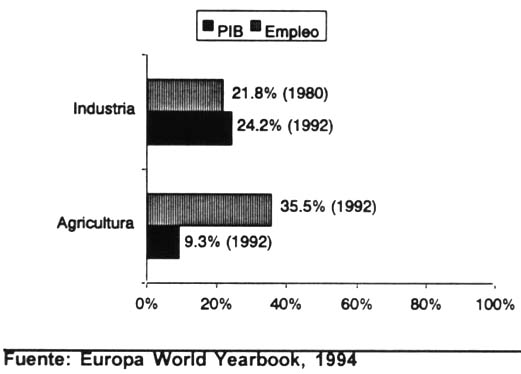

Que es la Agricultura
La agricultura (del latín agri ‘campo’ y cultūra ‘cultivo’, ‘crianza’)es el conjunto de actividades económicas y técnicas relacionadas con el tratamiento del suelo y el cultivo de la tierra para la producción de alimentos. Comprende todo un conjunto de acciones humanas que transforma el medio ambiente natural.
Importancia de la agricultura para la economía
El Salvador es un país predominantemente agrícola, aunque en 1992 le agricultura representó sólo el 9,3 por ciento del PIB y empleó al 35,5 por ciento de la población económicamente activa. El 57 por ciento aproximadamente de la población del país vive en zonas rurales y el 75 por ciento de la producción de cereales básicos se obtiene en explotaciones agrícolas familiares. Los principales cultivos alimentarios son el maíz, el arroz y los frijoles.
Los principales cultivos comerciales son el café, que en 1992 representó el 25,7 por ciento de las exportaciones, la caña de azúcar y el algodón. Los camarones son también un importante producto de exportación. El sector de la reforma agraria comprende el 21 por ciento de las tierras agrícolas. La finalidad de la estrategia agrícola nacional es aumentar el ingreso rural mediante la mejora de la productividad y el aumento de las exportaciones y los ingresos en divisas procedentes de la agricultura.